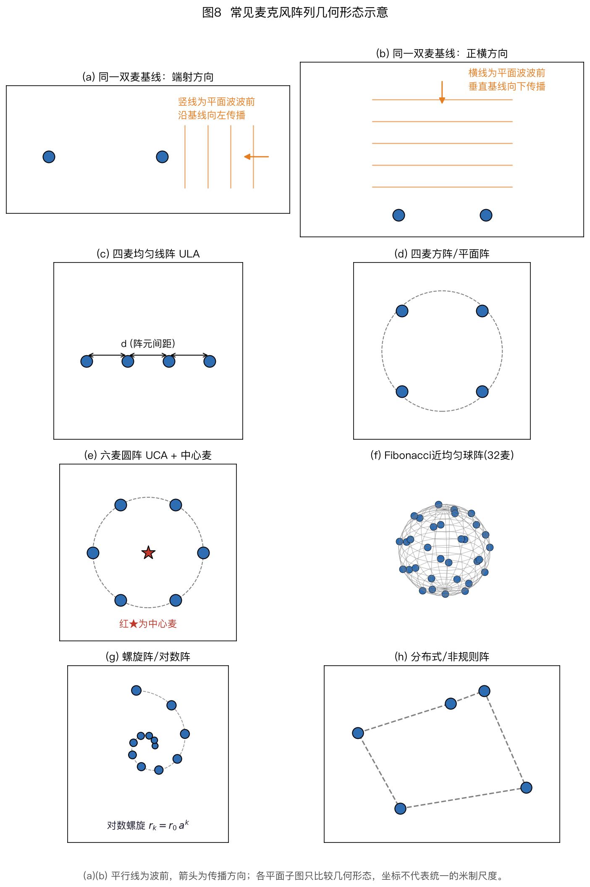
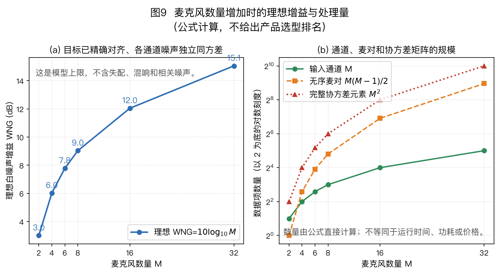
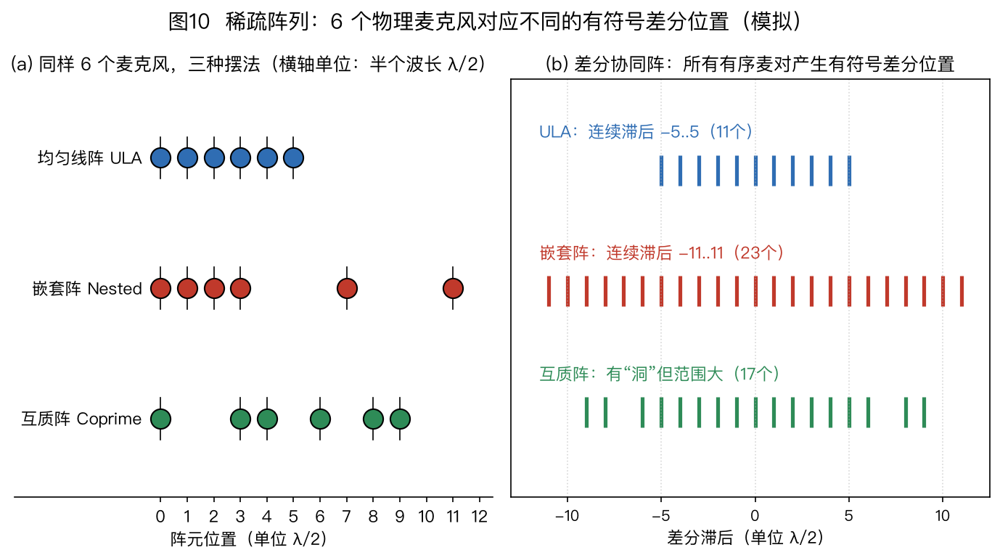

本页目录
⚠️ 本篇是正文第 3 章（正文共 11 章，另有附录 A/B），可独立阅读，前后篇见下方导航。
🏠 首页导读：🏠 导读与导航 ｜ 上一篇：第 2 章 · 声音到达阵列时发生了什么 ｜ 下一篇：第 4 章 · 声源定位（DOA 估计）
3. 阵列几何形态
3.1 形态总览

图8 画出八种常见形态。（a）（b）使用完全相同的一条双麦基线，只把目标方向分别放在端射（endfire）和正横（broadside）两个极限；平行线表示平面波的波前，箭头表示传播方向。这说明“端射/正横”首先描述工作方向相对基线的关系，不是两套不同的双麦硬件。
其余子图依次为均匀线阵（Uniform Linear Array，ULA）、方阵、均匀圆阵（Uniform Circular Array，UCA）加中心麦、按斐波那契球面规则确定性布置的 32 麦近均匀球阵、螺旋阵和分布式非规则阵。
裸露的全向麦克风只有几何位置，不会仅凭排列产生主瓣。（d）的四只麦虽然也落在同一个圆周上，这里按方阵的平面几何分析。
双麦基线的两种典型工作方向（使用的是同一类双麦几何，中间角度同样有意义）：
- 端射工作方向（endfire）：目标位于两麦连线的延长线上。把两麦沿设备的前后方向安装，再配合延时和差分处理，可以形成前方保留、后方抑制的响应；耳机和手机可采用这种布置。
- 正横工作方向（broadside）：目标位于两麦连线的垂直方向。把两麦沿设备的左右方向安装，再配合相应波束形成器，可以把主轴指向设备前方；笔记本和平板可采用这种布置。
算例 3-1 双麦耳机的差分——1 cm 间距怎么做心形指向
TWS 耳机上的双麦常采用端射（endfire）摆法：两个麦前后排列、间距 $d = 1$ cm，主轴沿两麦连线。它构成 §5.3 所述的一阶差分麦克风阵列（DMA，Differential Microphone Array）。
若只把两路信号乘实数增益后相减，即 $y = x_1 - g\,x_2$（$g$ 为实标量），无法形成前后不对称的心形幅度响应。前方与后方来声的麦间相位差分别为 $-\Delta\phi$ 和 $+\Delta\phi$，而 $|1-ge^{-j\Delta\phi}|$ 与 $|1-ge^{+j\Delta\phi}|$ 相等。
前后对称不等于一定是 8 字形。只有等增益相减（$g=1$），且麦间距相对波长足够小时，归一化响应才近似 8 字形；$g=0$ 就是单麦全向响应，$g=0.5$ 时正横方向仍保留幅度 $|1-g|=0.5$，没有 8 字形在该方向的零点。章末 E03-05 可复算这些差别。
要打破这种对称性，需先引入时延再相减：把后路麦的信号延迟 $\tau_0=d/c$，再从前路麦信号中减去：
$$y(t) = x_1(t) - x_2\!\left(t - \tfrac{d}{c}\right) \qquad\xrightarrow{\mathcal F}\qquad Y(f) = X_1(f) - e^{-j2\pi f d/c}\,X_2(f)$$
$\mathcal F$ 表示傅里叶变换。
其中 $x_1$ 是前路麦，$x_2$ 是后路麦，$d/c$ 是声音传播一个麦间距所需的时间。下面分别计算前方和后方来声的响应。
第 1 步：两麦之间的相位差。本算例用 $\Delta\tau$ 表示时差的非负幅值；带符号的 $\tau_{ij}=t_i-t_j$ 仍按 §2.1 定义。声音沿连线方向传来时，两麦时差幅值最大：
$$\Delta\tau = \frac{d}{c} = \frac{0.01}{343} \approx 29.2\ \mu s$$
1 kHz 时对应的相位差（时延在频域就是相位旋转，§2.3）：
$$\Delta\phi = 2\pi f\,\Delta\tau = \frac{2\pi\times1000\times0.01}{343} \approx 0.183\ \text{rad} \approx 10.5°$$
第 2 步：后方来声——理想模型下抵消。后方的声音先到后路麦 $x_2$、晚 $\Delta\tau$ 才到前路麦 $x_1$；给 $x_2$ 补上的延迟 $\tau_0=d/c$ 正好等于自然时差，两路在减法器中对齐，理想等幅模型给出 $y=0$。有限精度、通道失配和反射会使实际零陷保持有限深度。
第 3 步：前方来声——还剩多少。前方的声音先到 $x_1$、晚 $\Delta\tau$ 到 $x_2$；$x_2$ 又被电延迟推后 $\Delta\tau$，两路共错开 $2\Delta\tau$，即相位差 $2\Delta\phi \approx 21°$。两路信号是复平面上两个长度相同、夹角 $21°$ 的箭头，相减得到连接两尖端的弦。剩余幅度（两路幅度归一化为 1）：
$$|Y| = \left|1 - e^{-j2\Delta\phi}\right| = 2\sin\Delta\phi \approx 0.3643$$
这里先用未舍入的 $\Delta\phi=2\pi\times1000\times0.01/343$ 计算，最后才舍入幅度。换算成分贝：$20\log_{10}0.3643 \approx$ −8.8 dB。前方保留而后方出现零陷，低频近似下得到心形指向。只要电延迟与几何时差的关系保持不变，低频归一化波束形状随频率变化较小。
第 4 步：计算输出信噪比变化。与单个麦克风相比，前方信号幅度为 0.3643，对应 −8.8 dB。两路独立自噪声相减后功率相加，噪声功率增加约 3 dB，因此输出信噪比降低约 $8.8+3=11.8$ dB。这是一阶 DMA 在低频 WNG 较低的原因：间距越小、频率越低，$\Delta\phi$ 越小，目标信号在相减中保留得越少。
第 5 步：失配最先伤害哪里。后方零陷靠的是“两路幅度精确相等、相减归零”。若麦 2 的增益是 1.01，后方响应的绝对幅度为 $|1-1.01|=0.01$；相对单麦输入是 $20\log_{10}0.01=-40$ dB。波束图通常将目标方向归一化为 0 dB，这时还要除以失配后的前方响应：
$$|B_{\rm front}|=\left|1-1.01e^{-\mathrm j2\Delta\phi}\right|\approx0.3663,\qquad 20\log_{10}\frac{0.01}{0.3663}\approx-31.3\ \mathrm{dB}。$$
因此，“约 −40 dB”是以单麦幅度为参考的绝对残差；本算例归一到前方主响应后，零陷约为 −31 dB。两个数的参考量不同，不能混用。增益失配主要限制后方零陷的深度，依赖精确相消的微型差分阵列因此需要通道配对和标定。
端射摆法利用延迟与相减形成前后不对称；正横摆法则把主轴放在麦克风连线的垂直方向。
双麦只有 1 个独立时延观测。在预先限定声源位于某个平面或半空间时，它可以估计一维入射角并形成固定波束；若要在三维空间同时求方位和俯仰，一个时延方程不够，同一时延对应绕阵列轴的一圈方向，形成锥面模糊。增加阵元并改变几何后，覆盖范围、歧义形式和端射灵敏度也会变化。
多麦形态对比：
读表时先分清三个问题：覆盖说明阵列几何能观测哪些方向，优缺点说明同一几何在哪些条件下容易辨向或失效，典型应用只举安装场景，不代表该形态在应用中总是性能最优。表内“可测方位和俯仰”仍以阵列标定、同步和足够的信噪比为前提。
| 形态 | 覆盖 | 优点 | 缺点 | 典型应用 |
|---|---|---|---|---|
| 均匀线阵（ULA） | 一维 ±90° | 可直接利用平移不变结构；阵元集中在一条轴上，给定阵元数和间距时轴向孔径较大 | 不能由时延单独区分俯仰；靠近端射时 $\mathrm d\tau/\mathrm d\theta$ 趋近 0，角度误差被放大；还存在锥面模糊 | 条形音箱、会议设备 |
| 均匀圆阵（UCA） | 水平 360° | 水平面基线方向较均衡，适合全方位扫描 | 有限阵元只有离散旋转对称，波束仍随频率和转向变化；小半径在低频的电尺寸小，俯仰信息也有限 | 智能音箱、桌面会议设备 |
| 方阵/平面阵 | 单侧半空间；若两侧都开放则有镜像歧义 | 方位+俯仰都能测 | 阵列平面两侧的镜像方向具有相同时延，需挡板或先验消歧 | 视频会议一体机 |
| 球阵（刚性/开放球） | 全 $4\pi$ 立体角 | 三维覆盖较均匀，可录 3D 声场 | 成本高、体积大；有限阵元下波束仍随频率和方向变化 | 机器人听觉头、3D 录音、学术研究 |
| 螺旋阵/对数阵 | 宽频带 | 非均匀间距可打散周期性栅瓣 | 设计与宽带优化较复杂；自由场导向矢量仍可按已知坐标计算 | 宽带声源成像或阵列研究 |
| 分布式/随机阵 | 节点跨度可达房间尺度 | 长基线可提高部分方位的几何灵敏度；多位置观测可提供空间分集 | 节点常有独立时钟和不同声学路径；同步、位置标定、通信和缺包误差可能抵消长基线收益，空间分集也不保证抑制所有多径 | 多节点会议室、机器人网络 |
表中的“一维 ±90°”是以正横方向为零点的平面内角度范围；线阵的三维锥面模糊、平面阵的两侧镜像歧义，都不能只靠这一个范围读出。
例如，会议设备若只需判断桌面周围的水平 360° 方位，可先考虑圆阵；若还要分辨声源在阵列平面上方还是下方，单层圆阵的纯时延观测存在镜像歧义，应增加非共面阵元、挡板信息或场景先验。
跨房间多设备协同是另一类任务：长基线可能改善几何灵敏度，但必须先把跨设备时钟偏移和位置误差纳入预算。这些例子用任务条件筛选结构，并非表中形态的性能排名。
MUSIC 是多重信号分类（Multiple Signal Classification），ESPRIT 是借助旋转不变技术估计信号参数（Estimation of Signal Parameters via Rotational Invariance Techniques）；本章只指出其几何前提，算法见 §4.6。
读表时要区分两种几何歧义。线阵只有沿阵列轴的位置投影信息，因此同一组时延对应以阵列轴为轴的锥面；把麦继续加在同一直线上，能提高阵列增益和估计精度，却不能消除这类锥面模糊。非共线的平面阵能同时估计两个方向余弦，但若阵列两侧都开放，平面法向两侧的镜像方向仍可能产生相同时延，需要挡板、幅度模型或半空间先验消歧。
端射分辨率下降是另一类问题。若用 $\Delta\tau=d\sin\theta/c$ 表示时差幅值随角度的局部关系，则 $\theta\to\pm90°$ 时导数趋近于零，同样的时延误差会对应更大的角度区间；这与 §2.6 CRB 中 $\cos\theta\to0$ 时下界发散一致。
算例 3-2 端射灵敏度——同一个 10 μs 误差在不同方向的影响
§3.1 所述端射附近灵敏度下降，根源是时延与角度的关系 $\Delta\tau = \frac{d}{c}\sin\theta$（$\theta$ 从正横方向起算，$d$ 为麦间距）。对 $\theta$ 求导：
$$\frac{d\Delta\tau}{d\theta} = \frac{d}{c}\cos\theta \quad\Rightarrow\quad d\theta \approx \frac{c}{d\cos\theta}\,d\Delta\tau$$
即：同样的时延误差 $d\Delta\tau$，换算成角度误差时要除以 $\cos\theta$。
取 $d = 4$ cm 的线阵（与 §4.4 的例子一致）、时延误差 $d\Delta\tau = 10\ \mu s$（16 kHz 采样下不到 1/5 个采样点，是很容易残留的误差量级），算两个方向。
正横方向（$\theta = 0°$）：$\cos 0° = 1$，
$$d\theta = \frac{343\times10\times10^{-6}}{0.04\times1} \approx 0.0858\ \text{rad} \approx 4.9°$$
10 μs 误差对应约 5° 的角度误差。这也复现了 §4.4“4 cm 间距下 10 μs 误差对应约 5°”的结论。
端射附近（$\theta = 85°$）不能继续把 10 μs 当作“小扰动”。本例最大物理时延是 $d/c\approx116.6$ μs，85° 对应 $\tau\approx116.2$ μs。若估计值增加 10 μs，便超过物理上限，没有实数角度与之对应，系统应当判为越界或把结果限制在端射。
若估计值减少 10 μs，则
$$\hat\theta=\arcsin\!\left(\frac{(116.2-10)\times10^{-6}\times343}{0.04}\right)\approx65.6°\text{，}$$
误差约 19.4°。微分式在足够小的误差下仍说明灵敏度按 $1/\cos\theta$ 增大，但不能把 85° 处的 10 μs 线性外推成 56° 并当作精确误差。实际可用角域由允许误差、信噪比、快拍数和几何共同决定，不存在统一的“端点扣掉 30°”规则。
端射方向的非线性算例说明，阵列灵敏度随入射角变化。下面把几何设计中最常用的四条规律集中列出。
3.2 四条设计规律
以下四条是筛选阵列形态时的检查顺序，不是四种互不相关的性能分数。先看孔径与频带，再看方向覆盖、壳体影响和麦数带来的收益；两道算例随后展示数量级与近似边界。
3.2.1 先看孔径、方向、挡板和麦数
- 常规波束的分辨率尺度由孔径与波长之比决定（约 $\lambda/D$）：7 cm 级圆阵在 1 kHz 的这个尺度已经超过线阵的整个可视角域，方向选择性很弱；到 4 kHz 才进入几十度量级（见算例 3-3）。高频虽然能提供更大的电尺寸，却也更容易遇到空间混叠、传播衰减和阵列失配。设计时必须把这些因素一起考虑。
- 圆阵与线阵各有适用方向：线阵在正横附近投影孔径最大，转向端射时灵敏度下降；圆阵在水平面各方位的几何更均衡。球阵还可提供俯仰信息。哪一种识别率更高，取决于尺寸、挡板、房间、算法和评测方向分布，不能只按阵形下结论。Kumatani–McDonough–Raj《Microphone Array Processing for Distant Speech Recognition》CMU 课程讲义，2012
- 挡板效应必须纳入导向模型：麦克风装在刚性圆柱或球体上时，绕射和散射会改变跨通道的幅相响应。某些频段和方向上，它能增加可辨的幅相差；另一些位置也可能出现阴影或共振。因此应使用相应的解析散射模型或实测阵列流形，不能把挡板一概等效为固定倍数的“虚拟孔径”。
- 麦克风数量没有通用最优值：增加麦克风通常能提高统计稳定性和可控自由度，但收益取决于是否同时增加孔径、噪声相关性、带宽、算法和计算预算。对独立等功率自噪声，理想 DSB 的 WNG 为 $10\log_{10}M$，麦数翻倍增加约 3 dB；这只是特定噪声模型下的基准，不能单独决定产品所需的麦克风数量。
3.2.2 算例 3-3：6 麦圆环的数字
考虑一个用于教学的 6 麦均匀圆环，环径取 7.5 cm，即半径 $r = 3.75$ cm。这个尺寸只用于展示计算方法，不对应某一款产品；声速取 $c = 343$ m/s。
第 1 步：相邻麦距。6 个麦均匀分布在圆周上，相邻两麦的连线是正六边形的一条边。相邻麦距
$$d = 2r\sin\frac{\pi}{6} = 2\times0.0375\times0.5 = 0.0375\ \text{m} = 3.75\ \text{cm}$$
正六边形的边长恰好等于半径——这是 6 麦圆环特有的整齐性质。
第 2 步：相邻间距的保守检查。对均匀线阵，常用的半波长安全线是 $d\le\lambda/2$；若把两端射方向也纳入闭区间，等号仍有一对歧义（§2.6）。圆阵不是一条周期均匀线阵；此处只用相邻弦长做保守检查，先给出容易复算的频率尺度，再核对完整圆阵的导向矢量。代入：
$$f_{\rm check} = \frac{c}{2d} = \frac{343}{2\times0.0375} \approx 4573\ \text{Hz} \approx 4.6\ \text{kHz}$$
因此，按相邻间距的半波长充分条件，约 4.6 kHz 以下可通过这一保守检查。16 kHz 采样时，4.6～8 kHz 频段不再由这条条件保证；这不表示 4.6 kHz 是圆阵的精确混叠截止频率。
对本例这种理想规则六边形、窄带平面波阵列，更精确的无歧义分析需要比较完整的六维导向矢量，而不能只看一对相邻麦。Tucker、Zhao、Ahmad 与 Potter 的原始研究，Alias-Free Arrays，IEEE Signal Processing Letters 2022，§V-B给出规则六边形在完整单侧方向域上的临界相邻间距 $d=\lambda/\sqrt3\approx0.577\lambda$。本例 $d=3.75$ cm，对应频率 $f=c/(\sqrt3d)\approx5.28$ kHz；临界点存在相位歧义，该值讨论的是理想相位流形的歧义边界，不能据此保证有噪声、混响和通道失配时仍能准确定位。
阵列平面上下两侧的镜像时延歧义与上述单侧方向域内的窄带相位混叠是不同问题，即使频率低于 4.6 kHz 也仍可能存在。
可选措施包括降低高频子带权重、采用非均匀间距以减弱周期性歧义，以及定位时主要使用无混叠频段、增强时再利用高频信息。
第 3 步：波长与孔径的比。阵列孔径（阵列的最大尺寸）$D = 2r = 7.5$ cm。
- 1 kHz：波长 $\lambda = c/f = 343/1000 = 0.343$ m $= 34.3$ cm，孔径比 $D/\lambda = 0.075/0.343 \approx 0.22$——整个阵列只有约五分之一波长大小；
- 4 kHz：$\lambda = 343/4000 \approx 0.0858$ m $= 8.6$ cm，$D/\lambda = 0.075/0.0858 \approx 0.87$——孔径接近一个波长。
第 4 步：常规波束的角宽量级。用 $\lambda/D$（弧度，§2.6）做孔径尺度估计：
- 1 kHz：$\lambda/D \approx 0.343/0.075 \approx 4.6$ rad $\approx 262°$。这个尺度超过线阵从 −90° 到 +90° 的 180° 可视角域；对圆阵则不能把借自连续孔径的一维角宽直接与 360° 方位周期作严格比较。它仍清楚表明：1 kHz 下这只 7.5 cm 的环电尺寸很小，常规波束的方向选择性很弱；
- 4 kHz：$\lambda/D \approx 1.14$ rad $\approx 66°$，对应主瓣宽度量级 $\approx 0.886\lambda/D \approx 58°$（借用线阵公式估量级，圆阵精确系数不同）——进入「几十度」的量级，总算能分出「大概在哪一边」。
结论：4 kHz 时阵列的电尺寸接近 1，常规波束已可能呈现几十度量级的方向选择性；1 kHz 时电尺寸只有约 0.22，常规波束很宽。子空间估计或学习方法能在合适条件下利用微弱的跨通道差异，但不会凭空增加观测信息；低信噪比、强混响或模型失配时，低频方向仍难估。
3.2.3 算例 3-4：ULA 主瓣宽度计算
取一条 4 麦 ULA（等间距直线排列的阵列），间距 $d = 3$ cm，指向正横。首末阵元的物理跨度为 $(M-1)d=9$ cm；§2.6 从离散阵因子推得的窄主瓣近似则是
$$\mathrm{HPBW} \approx \frac{0.886\,\lambda}{Md}\ \text{rad}$$
这里的 $Md=12$ cm 来自 Dirichlet 核的近似尺度，不等于物理跨度。对小阵列要保留这个区别；该式是式(2-3)在正横方向 $\cos\theta_0=1$ 的形式。
1 kHz：波长 $\lambda = 343/1000 = 0.343$ m。若强行代入窄主瓣近似，会得到 $0.886\times0.343/0.12\approx2.53$ rad，但这个数不是该阵列的 HPBW。直接计算精确阵因子：端射处 $\psi=2\pi d/\lambda\approx0.550$ rad，
$$\left|B(90°)\right|=\left|\frac{\sin(M\psi/2)}{M\sin(\psi/2)}\right|\approx0.821，$$
即 $20\log_{10}0.821\approx-1.71$ dB。从 $-90°$ 到 $90°$ 都没有降到 −3 dB，所以本例在 1 kHz 下没有可定义的 −3 dB 主瓣宽度。
8 kHz：波长 $\lambda = 343/8000 \approx 0.0429$ m，
$$\mathrm{HPBW} \approx \frac{0.886\times0.0429}{0.12} \approx 0.317\ \text{rad} \approx 18.1°$$
这两个结果怎么读：1 kHz 下精确阵因子在可视范围内没有 −3 dB 交点，只能说明波束方向选择性很弱；不能把近似式给出的 145° 当成实际 HPBW。8 kHz 下近似估计约为 18.1°，主瓣明显收窄。只要几何和转向不变，处在窄主瓣近似的适用区间时，频率减半会使 HPBW 约增大一倍。

图 9（a）在目标精确对齐、各通道噪声独立同方差的条件下，按 $10\log_{10}M$ 画出理想 DSB 白噪声增益。（b）分别按 $M$、$M(M-1)/2$ 和 $M^2$ 计算输入通道、无序麦对与完整协方差矩阵的元素数量。右图的纵轴采用以 2 为底的对数刻度。这些数量用于说明数据结构怎样随 $M$ 增长，不等同于具体实现的运行时间、功耗或价格。
§3.3 转向非均匀稀疏阵，说明怎样用差分协同阵扩展虚拟孔径。
3.3 稀疏阵列与差分协同阵
3.3.1 协同阵的概念：从麦的位置到麦对的间距
均匀线阵若要在整个可视角域避免栅瓣，阵元间距需不大于半波长（§2.6）。在给定麦克风数量下，这一条件限制了物理孔径。
稀疏阵列（sparse array）相对于一个明确的密集参考网格，只启用其中一部分候选位置；“麦克风少”或“位置不均匀”本身都不足以构成这个定义。常见设计包括非均匀的嵌套阵、互质阵和删减阵，也可能保留等间距但存在空位。利用麦克风对的位置差，可以构造比物理阵元集合更长的虚拟阵列。
核心概念：差分协同阵（difference co-array）。理想远场窄带模型下，协方差矩阵第 $i,j$ 个元素的相位由麦 $i$ 与麦 $j$ 的位置差决定。收集所有麦对的位置差，就得到差分协同阵。
6 麦均匀线阵的位置是 {0,1,2,3,4,5}（单位 $\lambda/2$），不同的有符号滞后是 {0, ±1, …, ±5}，共 11 个。6 麦嵌套阵 {0,1,2,3,7,11} 可得到 {0, ±1, …, ±11}，共 23 个连续滞后（图10）。
这 23 个数是连续的有符号差分滞后，不是 23 路彼此独立的物理快拍。若按滞后平均、构造 Toeplitz 虚拟协方差并做空间平滑，可得到比物理阵更长的虚拟 ULA。
在模型和秩条件满足时，部分协同阵方法可能估计多于物理麦数的非相干源。可分辨源数仍取决于连续单侧滞后长度、重构方法、平滑后的矩阵维数、信噪比和快拍数，不能直接等同于 23。
差分集合只给出虚拟阵列的位置。要把这些位置用于子空间估计，还需要从协方差中构造相应的二阶统计量。
3.3.2 物理协方差怎样给出虚拟滞后
对互不相干的远场源，$\mathbf{R}$ 的第 $i,j$ 个元素是各源功率乘相位项 $e^{-j2\pi f(\tau_i-\tau_j)}$ 的和，只依赖两麦位置差。相同位置差的麦对可做平均，降低估计方差；不同位置差提供不同滞后。
把协方差元素按滞后重排后，可把连续的一段滞后解释为虚拟 ULA 的二阶统计量。它不是原始阵列快拍，因此标准 MUSIC 不能不经处理直接套用。通常还需 Toeplitz 重构、直接协同阵处理或空间平滑，才能形成满足子空间方法要求的虚拟协方差。
例如，取物理阵元位置 $\{0,1,3\}$（单位为半波长），一个正横 $0°$ 源和一个 $+30°$ 源各有单位功率，互不相关，各麦另加功率 $0.1$ 的独立噪声。按 §2.3 的正相位约定，第 $m$ 个导向分量为 $a_m(\theta)=e^{\mathrm j\pi p_m\sin\theta}$。若有符号滞后定义为 $\ell=p_i-p_j$，总体协方差给出
$$r[0]=2.1,\quad r[1]=1+\mathrm j,\quad r[2]=0,\quad r[3]=1-\mathrm j,\quad r[-\ell]=r[\ell]^*\text{。}$$
这些滞后可排列成位置 $\{0,1,2,3\}$ 的 $4\times4$ Toeplitz 矩阵 $T_{ij}=r[i-j]$。本例的特征值为 $0.1,0.1,4.1,4.1$，与两个独立源及正噪声功率一致；虚拟四阵元并不代表物理系统多录到一路独立波形。逐项重排和一个有限样本反例见本章 E03-07。
相干源、宽带混响、有限快拍和有洞差集都会降低可用秩和自由度。有限样本的滞后平均即使由合法的物理样本协方差出发，也不保证直接填成的 Toeplitz 矩阵半正定；构造可供子空间方法使用的虚拟协方差，需要检查秩与半正定性或采用有此保证的专门平滑构造。Pal 与 Vaidyanathan 原论文第 IV 节提出的协同阵空间平滑与任意填表并非同一操作。
可以把它理解为重新整理“麦对间距表”：相同间距的观测合并，不同间距按顺序排成一条虚拟标尺。标尺更长，潜在孔径更大；但只有完成统计重构并满足秩条件后，这些滞后才会转化为可用的子空间自由度。

图 10 左侧比较均匀、嵌套和互质三种摆法，横轴单位是半波长；右侧枚举所有有序麦对的位置差，得到有符号差分位置（也称有符号滞后）。均匀阵有 11 个连续滞后，图中的嵌套阵有 23 个连续滞后，互质阵覆盖范围更大但中间有空缺。连续滞后数描述虚拟孔径结构，不应直接写成 MUSIC 可分辨的源数。
这种虚拟观测依赖统计重构和秩条件；差分集合中的空缺、宽带信号和混响都会限制可用自由度。
3.3.3 代价与边界：差分空缺、宽带和混响
协同阵使用的是二阶统计量，需要专门的协同阵 MUSIC、Toeplitz 重构、空间平滑或稀疏重构。差分滞后中的洞还会使可用连续虚拟孔径缩短，插值或矩阵补全又会引入额外假设。
嵌套阵与互质阵最初主要在窄带阵列模型下发展，原始方法见 Pal 与 Vaidyanathan 的嵌套阵论文与 Vaidyanathan 与 Pal 的互质阵论文。
语音宽带、混响和频率相关阵列流形会增加处理难度。因此实际使用前应在目标频带和房间条件下验证，不能只按理论差集长度选型。
稀疏阵与分布式阵不是同一概念。稀疏阵强调只占用密集候选网格中的部分位置，位置可以非均匀，也可以是带空位的等间距子集；分布式阵由多个独立设备组成，除了几何布局，还要处理节点标定、独立时钟和通信。
上述几何分析默认通道和位置准确。实际系统还需要通过标定减小增益、相位、耦合和位置误差。
3.4 阵列校准：麦克风个个不一样时怎么办
前面的理想公式假设各通道增益和相位一致、阵元位置准确，并忽略壳体散射、声学耦合和电串扰。实际偏差会使导向模型与观测不匹配。本节把常见偏差写进模型，再说明怎样测量和补偿。
3.4.1 增益相位自校准：利用未知声源的多位置观测
把每只麦的响应误差写成一个复数：增益误差是幅度缩放，相位误差是额外旋转，合起来第 $m$ 路的实际增益是 $(1+\Delta g_m)e^{\mathrm{j}\Delta\phi_m}$，理想值是 1。
导向矢量 $\vec{a}(\theta)$ 的每个分量都会乘上这个误差，因此 MUSIC 谱峰会变宽或偏移，波束零陷也会变浅。麦克风阵列实测校准的一个原始例子见 Sachar、Silverman 与 Patterson 2005，IEEE Transactions on Speech and Audio Processing，13(1):42–52。
自校准可以不用已知方向的专用声源。常见做法是交替估计：先固定通道误差估方向，再固定方向估各麦的复增益，循环到目标函数收敛。
这种方法依赖可辨识条件。若只有一个固定方向，声源相位、传播相位和麦克风相位误差可能互相混淆；加入多个充分分散的方向、频点或几何约束后，才有机会分离这些未知量。具体需要多少方向取决于模型参数和约束，不能用一条固定数字概括。
复增益标定处理单通道幅相偏差；跨通道电串扰可在一定线性近似下写成频率相关混合矩阵，壳体散射则通常还随入射方向变化。
3.4.2 互耦补偿：把串音矩阵抵消掉
电路走线或器件间的线性串扰，在近似不随声源方向变化时可写成频率相关矩阵 $\mathbf{C}(f)$，实际导向矢量变为 $\mathbf{C}(f)\vec{a}(f,\theta)$。
壳体绕射和散射直接改变声场，通常应写成方向相关的实测流形 $\vec a_{\rm meas}(f,\theta)$，或在确有依据时用 $\mathbf C(f,\theta)\vec a(f,\theta)$ 表示，不能无条件并入固定 $\mathbf C(f)$。可用已知方向的测量拟合模型，也可直接把实测阵列流形存入系统。
若对固定混合矩阵显式求逆，$\mathbf{C}(f)$ 条件数很大时会放大噪声，因此通常需要正则化，而不是无条件左乘精确逆矩阵。依赖深零陷的差分或超指向设计通常比 DSB 更容易受失配影响。
耦合矩阵描述通道间混合，但不能替代麦克风坐标标定。位置误差会直接改变传播相位。
3.4.3 位置自标定：有锚测绘、无锚边走边建图
8 kHz 的波长约为 4.3 cm，2 mm 位置误差对应的相位误差为 $2\pi\times0.002/0.0429\approx0.29$ rad，即约 17°；低频下同一位置误差造成的相位偏差较小。
位置标定有两类方法：
- 有锚点标定：在多个已知位置播放信号，由 TDOA 反解麦克风坐标；
- 无锚点自标定：同时估计声源位置与麦克风位置，要求声源运动或多位置观测满足可辨识条件。
无外部锚时，观测至少不能区分整体平移、旋转和镜像；只用方向观测时还可能不能确定尺度。实现中要固定参考麦克风、坐标轴和尺度，或加入已知距离，才能报告唯一的绝对坐标。相关可辨识性分析可参见 Kuang 等，ICASSP 2013。
分布式阵列还需同时估计节点时钟关系（§10.2），否则 TDOA 会包含系统偏差。
下表汇总不同失配首先影响的量、误差尺度和补偿方法。表中的数值用于比较误差的数量级，不是各种设备的统一验收门限。
3.4.4 失配灵敏度表：先坏哪、坏多少
| 失配类型 | 示例量级 | 首先受影响的量 | 按该示例计算 | 可采取的措施 |
|---|---|---|---|---|
| 增益失配 | 1%（约 0.1 dB） | 差分/超指向的零陷深度 | 本例后方残差相对单麦幅度为 −40 dB；相对前方单位响应约 −31 dB（§3.1 算例 3-1 第 5 步） | 产线逐只配对、出厂标定系数 |
| 相位失配 | 2°（高频段） | 高频指向精度 | 2° 相位误差在 8 kHz 约等于 0.24 mm 等效位置误差，MUSIC 峰偏、旁瓣抬高 | 同增益，一起标 |
| 位置误差 | 2 mm | 高频导向矢量 | 8 kHz 下约 17° 相位误差；1 kHz 下约 2°。后者对常规主瓣可能较小，但在依赖精确相消的零陷中仍可能显著：两路残余幅度约 $2\sin(1°)=0.0349$，相对单路约 −29 dB | 有锚/无锚位置标定 |
| 耦合与壳体散射 | 随结构、频率而变 | 零陷深度、旁瓣电平 | 不能仅由一个间距门槛判断；须比较自由场模型与实测流形 | 使用实测流形，或正则化估计 $\mathbf{C}(f)$ |
| 时钟漂移（分布式） | 晶振几十 ppm | TDOA 系统性偏差 | 跑 1 小时即差约 0.18 秒（百毫秒级），是百微秒级时差的上千倍（§2.1、§10.2） | 共时钟/在线同步补偿 |
增益失配一行的两个 dB 数有不同分母。−40 dB 是后方残差相对一只麦克风输入幅度的电平；−31 dB 先把前方响应归一到 0 dB，再读后方零陷的相对电平。读波束图时应使用后一个口径，不能把两数当成同一零陷深度。
位置误差造成的相位偏差随频率增大；增益漂移、耦合和噪声则未必遵循同一单调关系。依赖精确相消的零陷和超指向设计通常最敏感。
固定一体式阵列常用出厂标定。分布式阵列还需处理节点位置、时钟偏移和采样率漂移，并根据设备移动或时钟变化决定是否在线更新。
工程流程通常分三步：
- 在受控声场中测各通道的频率响应和阵列流形；
- 把补偿参数写入设备；
- 用若干已知方向复测主瓣、旁瓣和零陷。
若设备结构、温度或节点位置会变化，还要定义重新标定的触发条件。采用逐只通道修正、整机流形查表还是在线联合估计，取决于硬件一致性、存储、算力和使用环境。
标定结果不能只保存一组没有上下文的复数。最小标定记录应包括设备或阵列序列号、麦克风通道顺序、坐标系与长度单位、参考麦克风、采样率、频率网格、复增益或实测流形、测量温湿度、测量日期、算法版本和原始记录校验值。加载时先核对通道数、设备身份、坐标维度和频率网格；任一项不匹配时应拒绝套用，而不是截断或重排数组。产线验收还要用未参与拟合的方向复测目标响应、旁瓣或零陷，并把允许误差写成设备规格，而不是沿用某个教学算例的门限。
geometry.py 提供统一的平面波和球面波导向矢量，正角、参考麦克风和声速约定与 §2.1 一致。它是校准前后的共同计算基线，不包含针对某种硬件的自动校准器。对应测试会检查正角时 $\tau_{21}\lt 0$、导向相位为正，以及近场幅度和传播距离；这样可在替换实测流形前先排除坐标轴、通道顺序和傅里叶符号错误。
几何决定可观测的空间信息，标定决定理论模型能否用于实测数据。第 4 章将从 GCC-PHAT 开始介绍声源定位算法。
本章练习
-
协同阵数差集验证：6 麦均匀线阵位置记为 {0, 1, 2, 3, 4, 5}（单位 $\lambda/2$），列出全部麦对位置差，验证连续差集是 {0, ±1, …, ±5}、共 11 个有符号滞后；再对嵌套阵 {0, 1, 2, 3, 7, 11} 做一遍，验证是 {0, ±1, …, ±11}、共 23 个连续滞后。为什么还不能直接说它能分辨 22 个声源？
答案要点：这些数是二阶统计量中的有符号滞后，不是 23 路独立快拍。必须先按滞后平均并构造满足结构约束的虚拟协方差，必要时再做空间平滑。可分辨源数由平滑后矩阵的维数和秩、源相关性、信噪比及快拍数共同决定，不能直接用 23 减 1。
-
栅瓣与挡板二选一：7.5 cm 环径的 6 麦圆环（§3.2 算例 3-3），若把工作频率推到 8 kHz，会发生什么？挡板（规律 3）又是在补哪一段的短板？
答案要点：8 kHz 波长约 4.3 cm，半波长约 2.1 cm，小于 3.75 cm 相邻麦距，已经不满足全视场无混叠的半波长充分条件；对理想规则六边形，它也高于 §3.2 算出的约 5.28 kHz 完整单侧方向域无歧义边界，因此存在某些同相位的方向对。某个指定转向是否出现等高歧义，仍须检查完整几何，不能只套 ULA 的栅瓣角公式；宽带融合可能帮助区分单频点歧义。挡板会以频率和方向相关的方式改变幅相响应；若模型使用得当，这些额外差异可帮助消歧，但它不是固定地把低频下限移动某个倍频程。
下面六题使用 exercises_spatial.py 复算，检查差分位置、反三角函数边界、角度约定、远场近似误差、双麦相减响应和通道复增益标定。第七题用独立的协同阵脚本，避免把“差集长度”误当作有效虚拟协方差。
E03-01：差分位置相同，观测次数也相同吗？ 对位置 $\{0,1,2,3,4,5\}$ 和 $\{0,1,2,3,7,11\}$，枚举全部有序麦对，包括同一麦与自身配对。计算每个差分滞后的重数，并检查重数之和。位置单位为半波长。
参考答案：两种布局都有 $6\times6=36$ 个有序麦对，零滞后的重数均为 6。均匀阵的滞后从 −5 到 5，重数依次为 $1,2,3,4,5,6,5,4,3,2,1$，共 11 个不同位置。
嵌套阵的滞后连续覆盖 −11 到 11，共 23 个；正滞后 1～11 的重数依次为 $3,2,1,2,1,1,1,1,1,1,1$，负滞后与之对称。相同滞后的样本可以平均，但不同麦对可能共享同一通道，不能据重数直接假定它们统计独立，更不能把 23 个差分位置当作 23 路原始录音。
E03-02：把越界时延与大角度误差分开。 麦距 4 cm、声速 343 m/s，真角取 0° 和 85°。分别给真实时延加、减 10 μs，用完整反正弦反算；若反正弦输入超出 $[-1,1]$，应如何记录？
参考答案：正横的真实时延为零，两个估计角分别约为 −4.92°、+4.92°。85° 时的真实时延约为 116.17 μs；减去 10 μs 后约为 65.57°，增加 10 μs 则超过最大时延 $0.04/343\approx116.62$ μs，无实数方向可解。保留更多位计算，再将角度舍入到两位小数。
代码将越界结果记为 valid=false、角度为 null，不把它悄悄夹到 90°。系统可以另设夹限策略，但必须保留越界标记；夹限输出是恢复动作，不是一次准确的方向观测。
E03-03：同一方向为什么会有两个方位角数字？ 已知方向单位向量 $\vec u=[-1/2,-1/\sqrt2,1/2]^\top$。按本书约定——方位角零点为 $+y$、正角转向 $+x$——反算方位角与俯仰角，并将角度重新代回方向向量。再与从 $+x$ 朝 $+y$ 计角的常见数学约定比较。
参考答案：本书使用 $u_x=\sin\theta\cos\varphi$、$u_y=\cos\theta\cos\varphi$、$u_z=\sin\varphi$，因此 $\theta=\operatorname{atan2}(u_x,u_y)\approx-144.74^\circ$，$\varphi=\arcsin(1/2)=30^\circ$。代回后恢复原来的三个分量，双精度程序的最大绝对误差小于 $10^{-14}$。
从 $+x$ 计角时，$\alpha=\operatorname{atan2}(u_y,u_x)\approx-125.26^\circ$；它与本书的关系是 $\theta=90^\circ-\alpha$，再将角度折回选定的 $360^\circ$ 区间。两者描述同一方向，不能混用数值与导向模型。NumPy 的 atan2 文档明确规定第一个参数通常对应纵坐标、第二个对应横坐标；函数不会替调用者选择本书的角度零点。
E03-04：球面波何时足够接近平面波？ 三只麦位于 $(-0.05,0)$、$(0,0)$、$(0.05,0)$ m，中心麦作参考，声速为 343 m/s。声源方向为本书方位角 $30^\circ$，距中心分别为 0.2、0.5、2、20 m。用真实距离差与平面投影分别计算相对时延，比较三通道时延误差的均方根，并换算为 4 kHz 的相位误差。
参考答案：声源位置为 $(r/2,\sqrt3r/2)$，真实距离为 $d_m=\sqrt{r^2-2rx_m\sin30^\circ+x_m^2}$，相对时延为 $(d_m-r)/343$；平面近似为 $-x_m\sin30^\circ/343$。在 $r=0.2$ m 时，真实相对路程约为 $[29.129,0,-19.722]$ mm，平面模型为 $[25,0,-25]$ mm。
三通道误差先平方、取平均再开方；参考麦的零误差也计入分母 3。相位误差采用未绕回的 $360f\Delta\tau$，不能先折回 $[-180^\circ,180^\circ)$ 再比较模型。
| 声源距离 / m | 时延误差均方根 / μs | 4 kHz 相位误差均方根 / ° |
|---|---|---|
| 0.2 | 11.28 | 16.24 |
| 0.5 | 4.47 | 6.44 |
| 2 | 1.12 | 1.61 |
| 20 | 0.11 | 0.16 |
近场还存在幅度差。在 0.2 m 处，以中心麦归一化的幅度约为 $[0.8729,1,1.1094]$，并非全为 1。距离增大时，本例的相位和幅度都逐渐接近平面模型；是否可以忽略误差取决于频带与容差，不能把表中的某个距离当作所有阵列的统一边界。这是本书自由场几何计算，未模拟反射、挡板或麦克风指向性。
E03-05：前后对称为什么不一定是 8 字形？ 两个理想全向麦间距 1 cm，声速 343 m/s，频率 1 kHz。先计算不加电延迟的 $y=x_1-gx_2$，分别取 $g=0,0.5,1$，比较前端射、后端射和正横的幅度。再令 $g=1$，给后路增加 $d/c$ 延迟，比较两个端射方向。
参考答案：令 $p=2\pi fd/c\approx0.18318$ rad。不加电延迟时，两个端射方向幅度相同，平方均为 $1+g^2-2g\cos p$；正横幅度为 $|1-g|$。按未舍入的 $p$ 计算，最后保留四位小数：
| 实增益 $g$ | 前端射幅度 | 后端射幅度 | 正横幅度 |
|---|---|---|---|
| 0 | 1.0000 | 1.0000 | 1.0000 |
| 0.5 | 0.5165 | 0.5165 | 0.5000 |
| 1 | 0.1829 | 0.1829 | 0.0000 |
只有最后一行在正横有零点。额外给后路延迟 $d/c$ 后，前方响应为 $|1-e^{-\mathrm j2p}|=2\sin p\approx0.3643$，后方为 0。相对于单麦的幅度尺度保持不变，不分别把每行归一化到峰值。
本题展示增益和延迟怎样改变理想模型的对称性，不是实测零陷深度。有限通道失配、反射与高频下的小间距近似误差仍须单独验证。
E03-06：方向误差还是通道相位误差？ 两只同步麦克风位于 $x_1=0$、$x_2=d=8.575$ cm，声速为 $343$ m/s，频率为 $1$ kHz。按 §2.3 的约定，麦 1 是参考通道；麦 2 有未知但在两次观测间不变的相对复增益 $g$。
用两个方向已知的窄带校准声源，分别置于 $+30°$ 与 $-30°$。设源在麦 1 的复幅度为 $b_\theta$，测得两麦复谱之比 $q_\theta=X_2/X_1$ 分别为 $1.2e^{\mathrm j75°}$ 和 $1.2e^{-\mathrm j15°}$。
先根据方向求两次理想导向比 $a_2/a_1$，再分别由 $q_\theta$ 算出 $g$。如果误把 $g$ 当成 1，只凭 $+30°$ 那次测得的相位反算方向，会得到多少度？最后说明为什么一条方向未知的观测不能同时确定方向与通道相位误差。先手算，再运行 E03-06；本题没有录音噪声、房间反射或设备漂移。
参考答案：几何相位。 $d=\lambda/4$，故 $\psi(\theta)=2\pi fd\sin\theta/c=(\pi/2)\sin\theta$。两已知方向的几何相位分别为 $+45°$ 和 $-45°$，理想导向比分别为 $e^{\mathrm j45°}$ 和 $e^{-\mathrm j45°}$。$q_\theta$ 中的公共源幅度 $b_\theta$ 已经约掉，不要求两次播放同样响。
参考答案：复增益与错误角度。 两次计算都得到 $g=q_\theta/(a_2/a_1)=1.2e^{\mathrm j30°}=1.03923+0.6\mathrm j$。将麦 2 除以这个复增益后，相对相位回到 $\pm45°$。若忽略相位校准，把测得的 $75°$ 全当作几何相位，则 $\sin\hat\theta=75°/90°=5/6$，得到 $\hat\theta\approx56.44°$，相对真实 $30°$ 偏了约 $26.44°$。
参考答案：可辨识边界。 仅有第一条方向未知的 $q=1.2e^{\mathrm j75°}$ 时，$(\theta=30°,\arg g=30°)$ 和 $(\theta=0°,\arg g=75°)$ 都能解释它，幅度同为 $1.2$。本题一个方向已知的无噪声观测其实足以求双麦相对复增益；第二个已知方向用于检查“复增益不随方向变化”这一假设。
若声源方向未知，仅增加任意方向的观测而不加几何、频率或校准约束，也不能保证唯一分开方向和相位误差。实测中壳体散射可能使误差随方向变化，需按 §3.4 测量阵列流形，不能用这一个固定 $g$ 外推。
E03-07：从三麦协方差构造虚拟四阵元统计量。 物理位置为 $p=\{0,1,3\}$，单位为半波长。两个互不相关的远场窄带源分别在 $0°$ 和 $+30°$，各有单位功率；独立通道噪声功率为 $0.1$。按 $a_m(\theta)=e^{\mathrm j\pi p_m\sin\theta}$、$R_{ij}=E[X_iX_j^*]$ 和 $\ell=p_i-p_j$，先算有符号滞后 $r[0],r[\pm1],r[\pm2],r[\pm3]$，再按 $T_{ij}=r[i-j]$ 写出连续位置 $0,1,2,3$ 的虚拟 Toeplitz 矩阵，检查共轭对称、特征值与物理通道数。
参考答案：总体协方差。 两个导向矢量是 $[1,1,1]^\top$ 和 $[1,\mathrm j,-\mathrm j]^\top$。例如 $R_{10}=1+\mathrm j$，因为 $p_1-p_0=1$；$R_{21}=0$，因为相应滞后为 2、两个源的相位项相消。因此 $r[0]=2.1$，$r[1]=1+\mathrm j$，$r[2]=0$，$r[3]=1-\mathrm j$，负滞后由共轭得到。
$$\mathbf T=\begin{bmatrix} 2.1&1-\mathrm j&0&1+\mathrm j\\ 1+\mathrm j&2.1&1-\mathrm j&0\\ 0&1+\mathrm j&2.1&1-\mathrm j\\ 1-\mathrm j&0&1+\mathrm j&2.1 \end{bmatrix}\text{。}$$
它等于两个四维导向矢量的外积之和加 $0.1\mathbf I$。这两个向量彼此正交、平方范数均为 4，故特征值是 $4.1,4.1,0.1,0.1$；四维只是二阶统计量的索引长度，物理录音仍只有三路。
参考答案：有限样本反例。 改取一次物理快拍 $\vec x=[1,0,1]^\top$，样本协方差 $\vec x\vec x^H$ 的特征值为 $2,0,0$，是合法半正定矩阵。按相同滞后平均，$r[0]=2/3$、$r[\pm3]=1$、其余滞后为零；直接填成的 $4\times4$ Toeplitz 矩阵有特征值 $5/3,2/3,2/3,-1/3$，已不再半正定。
不能把这种任意填表直接交给 MUSIC 当作有效协方差；要检查矩阵性质，或采用文献中有半正定保证的协同阵空间平滑构造。
先从上面的外积与滞后手算，再运行 E03-07 脚本 核对两组特征值。它只复算窄带二阶统计量，没有生成四通道声音，也没有证明三只麦在任何 SNR 或快拍数下都能分辨四个声源。Pal 与 Vaidyanathan 2010 第 IV 节给出利用嵌套阵二阶统计量与空间平滑估计方向的原始方法。
更多跨章练习和音频条件见实验总览。其中整数延迟音频只提供已知通道时差，没有模拟某一真实麦克风外壳；不能由该样本推断挡板收益或阵列标定精度。
📄 本篇信息：配图 3 张 ｜ 回首页